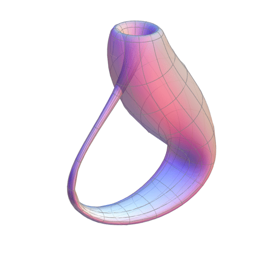
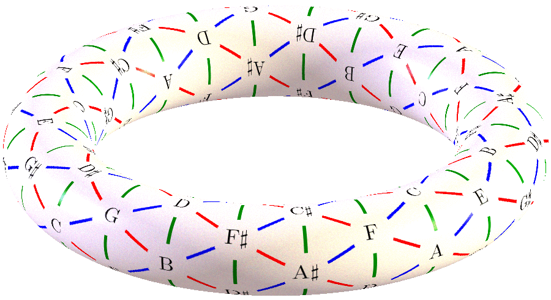
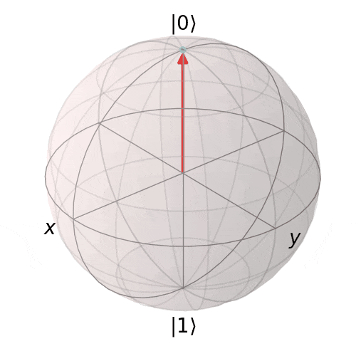
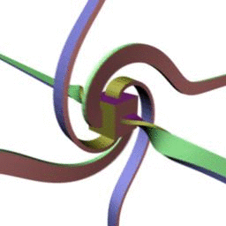

主要研究兴趣：
Zhian Jia | 贾治安
- 简历 : CV, Web version of cv (updated intermittently)
- 邮箱: giannjia@foxmail.com
- 单位: 中南大学, 物理学院，量子物理研究所 （课题组主页，个人主页）
- 谷歌学术: Zhian Jia
- Orcid: 0000-0001-8588-173X
- Inspire HEP: Zhian Jia
- Arxiv: link
- 研究博客: link
- B站: 费兹克斯的编年史
- 知乎: 也疏寒
- Mastodon: Zhian Jia
- Github: Zhian Jia







欢迎来到我的主页！
我主要从事数学物理与理论物理方向的研究，尤其是量子代数在量子场论、量子物态、量子信息与量子计算中的应用。近年的研究重点在于拓扑场论及其晶格实现（即拓扑序），并探讨场论与晶格框架下的广义对称性。我也量子信息与量子计算理论方向开展研究。同时，我对高能物理、量子物质与量子信息科学之间的交叉领域极感兴趣，尤其致力于运用量子信息的方法研究量子场论与凝聚态体系。
$$ \operatorname{Hopf}: \mu\circ (\operatorname{id}\otimes S) \circ \Delta = \eta\circ \varepsilon = \mu \circ (S\otimes \operatorname{id}) \circ \Delta$$
$$\operatorname{Bulk-Boundary}: \mathsf{Bulk} \simeq Z(\mathsf{Boundary}) $$
$$\operatorname{TQFT}: \mathsf{Cob}_{d+1} \to \mathsf{Hilb} $$
$$\operatorname{QECC}: \mathsf{R}\circ \mathsf{E}(\varrho) \propto \varrho $$
$$\text{index}(D) = \int_{{T^*}M} \text{Ch} (\psi(\sigma_H(D))) \wedge \text{Td}(M)$$
$$\operatorname{Anyon condensation}: \mathbf{C} \to \mathsf{Mod}_L(\mathbf{C})= \mathbf{C}_L$$
$$\operatorname{SymTFT}: \mathbf{B}_{sym} + Z(\mathbf{B}_{sym}) + \mathbf{B}_{phys} $$
更多细节请参看我的
研究页面 以及 论文列表.
如果你对这些内容感兴趣，欢迎通过邮件联系我。
诚然，我们极少信任比自己更好的人。我们甚至宁可避免与他们的来往。 相反，我们最常吐露心迹的，是与我们相似，与我们有着共同弱点的人。因此，我们并不希望改掉自己的弱点，也并不希望变得更好。我们只是希望，在我们的道路上受到相互的怜悯和鼓励。
除数学与物理研究之外，我亦喜爱阅读与写作，比较喜欢的作品包括《百年孤独》、《堂吉诃德》、《白鲸》、《卡拉马佐夫兄弟》、《在路上》《暗淡蓝点》等作品，同时也乐于旅行。
我的2025阅读列表可参看 此页面。